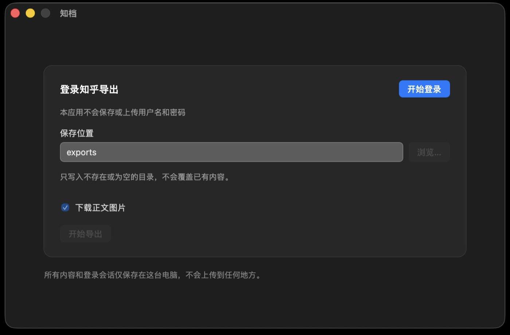
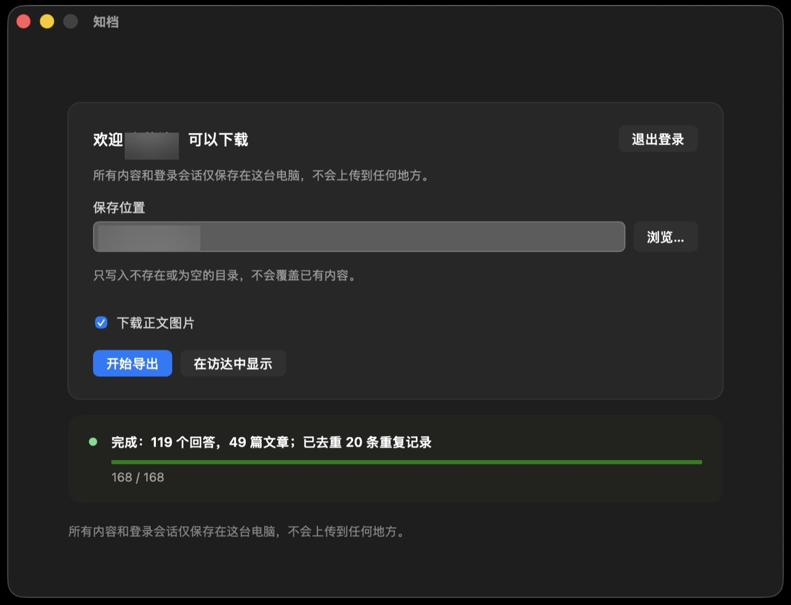

知档
本地归档你的知乎回答和文章
「知档」即知乎作者归档。一个安全、开源的内容导出工具，方便作者把知乎上自己的内容归档导出为 Markdown、JSON 和本地图片。
从一个很具体的问题开始
作者在内容平台上长期创作之后，如何把自己的作品完整、安全地保存下来，并继续由自己控制。
知档的回答是：把作者自己的知乎创作，转换成开放、可读、可迁移、由作者自己保管的本地归档。
你会得到什么
导出结果是一个普通的本地文件夹，可以直接读、备份、迁移到自有网站。index.json 和 Markdown 被当作长期数据格式来维护。
导出目录/ ├── answers/ # 每条回答一个 Markdown 文件 ├── articles/ # 每篇文章一个 Markdown 文件 ├── images/ # 正文里的图片，全部下载到本地 ├── index.json # 全部内容的结构化索引（公开 schema） ├── export-report.json # 总数 / 分页 / 去重 / 失败的完整报告 └── README.md # 这份导出的说明
每个条目保留原文链接、创建与更新时间、问题 ID、点赞与评论数、封面等元数据。接口报告总数、分页实际返回数、去重后的唯一数会被分别记录；无法解释的差异会给出完整性警告，而不是静默生成错误数据。
怎么用
独立桌面应用，不需要安装 Node.js、Chrome 或任何开发工具。

下载并打开
从 GitHub Releases 下载 .dmg，拖进「应用程序」打开。打开后直接是导出设置界面。
登录知乎
点「开始登录」，在弹出的独立窗口里正常登录（扫码、验证码或密码）。登录信息只留在本机。

选目录，导出
确认保存位置，点「开始导出」。每一项的进度都能看到，可以随时暂停、跳过某一项；完成后显示汇总，并可一键在访达中打开结果。
设计原则
无论知档发展到什么程度，都保持以下原则。
平台独立
知乎是当前的内容来源，但数据模型不永远绑定于某个平台的页面结构。
本地优先
作者应能取得自己的完整数据，并能在没有任何云服务的情况下继续使用。
安全隐私
登录信息、Cookie 和导出内容默认只保存在本机，不自动上传；不加入遥测、远程日志或用户内容上传。
开放格式
内容和元数据优先采用公开、可迁移的格式，不制造新的平台锁定。
隐私
这是知档最在意的一层，也是它和「一键搬运」类工具的根本区别。
- 应用在你自己的电脑上运行，本地服务只监听
127.0.0.1。 - 在应用内置的登录窗口里直接登录知乎，不需要在表单、终端或配置文件里填密码或 Cookie。
- 登录会话由系统自带的 WebView 管理（macOS 上是 WKWebView），本应用的后端服务不接触、不读取。
- 回答、文章和图片只写入你指定的本地目录。
- 不包含遥测、分析、广告、远程日志或开发者服务器上传。
- 点「退出登录」即可清除会话；删除导出目录即可清除导出内容。
详见 隐私说明。
边界与已知限制
知档只做一件事：完整、安全地导出作者本人的知乎内容。
- 只用于导出本人创作或已获授权的内容。
- 不提供验证码绕过、访问控制规避、代理池或账号池。
- 不下载评论正文、粉丝列表、关注关系或其他用户资料。
- 遇到登录失效或安全验证时停止，由你在登录窗口中正常完成。
- 这是独立开发的非官方项目，与知乎不存在隶属、合作、授权或认可关系。
- 目前只在 macOS（Apple Silicon）上完整测试；使用免费 ad-hoc 签名，首次打开会有 Gatekeeper 提示，需手动允许一次。
路线图
记录方向和优先级，不代表功能已完成，也不构成发布时间承诺。
导出体验重构：list-first 流程、每项进度可见、精确内容哈希检测重复（只读提示）、暂停/继续、单项跳过、断点续传。1.1 已正式发布。
Apple 签名 + 公证：官网直接分发，消除 Gatekeeper 警告。
Windows 打包与分发：WebView2 登录、安装包、代码签名消除 SmartScreen 警告。
完整路线图见 ROADMAP.md。